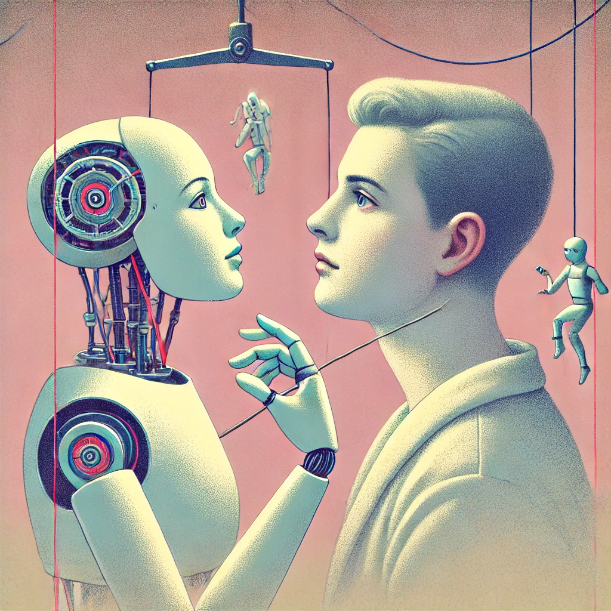

작가
CLAMP
출판일
2000년
감상평에 대한 AI그림
만화책이다. 인간과 안드로이드 로봇간의 사랑을 다루며, 여타 작품들과는 달리 등장하는 모든 AI가 약인공지능이라는 점이 가장 큰 특징이다.
결국 주인공과 제과점 아저씨는 보답받을 수 없는 일방적인 사랑이더라도 좋은 기억이 남았다면 된다는 결론에 다다르게 된다. 사랑을 해본 적은 없지만 작품이 전하는 바는 좋다고 생각한다.
감상평에 대한 AI평가
감상문을 잘 정리해 주셨습니다. 작품의 주요 특징인 ‘약인공지능’과 사랑의 주제를 간결하게 설명한 점이 인상적입니다. 특히, 보답받을 수 없는 사랑이라도 좋은 기억이 남는다면 충분하다는 결론이 작품의 메시지를 효과적으로 전달하고 있습니다.
다만, 약인공지능이라는 설정이 이야기 전개에 어떤 영향을 미쳤는지 조금 더 설명하면 좋을 것 같습니다. 또한, 마지막 문장에서 “사랑을 해본 적은 없지만”이라는 표현이 갑작스럽게 등장하는데, 이 부분을 자연스럽게 연결하면 글의 흐름이 더 매끄러워질 것입니다.
작품의 메시지를 잘 이해하고 자신의 생각을 솔직하게 표현한 점이 돋보이며, 조금 더 구체적인 설명이 추가되면 더욱 깊이 있는 감상문이 될 것 같습니다. 😊